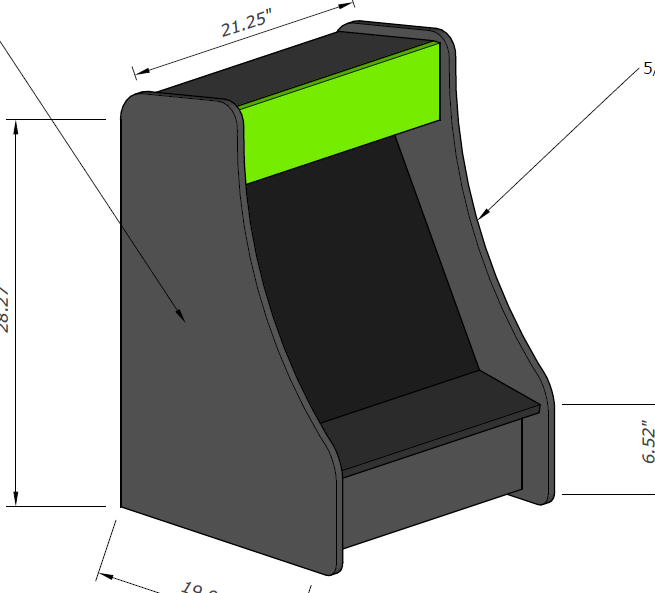

A Maker and Student From Canada.
Bartop Arcade Cabinet
This was a school project, that is a constant work in progress. Its completable using basic tools,
one 8' by 4' sheet of MDF, 1/4" plexiglass, either a Raspberry Pi, or any other PC that fits inside
the case, arcade buttons/hardware, and an old monitor.


The cabinet was designed in Sketchup, and blueprints were made in Layout. The files are available putlinkhere.
I built this cabinet in roughly four months, as a highschool shop project. This project is fairly easy to accomplish if you have basic electronics knowledge, woodworking skills, and good problem solving skills. The cabinet, once complete, will play any arcade game ever made, NES, SNES, N64, PS1, Sega Genesis, and any other retro game console you throw at it.
*This is by no means a complete guide, using common sense and your own problem solving skills is required to build one of your own.*
Components Needed
- 4'x8' MDF
- Small Computer (RasPi, Mini ITX)
- Arcade buttons and joystick
- Monitor
- Power Supply
- LED light strips ~2'
- 1/4" Plexiglass (Optional)
- Primer/Paint/Stickers
- Rubber feet